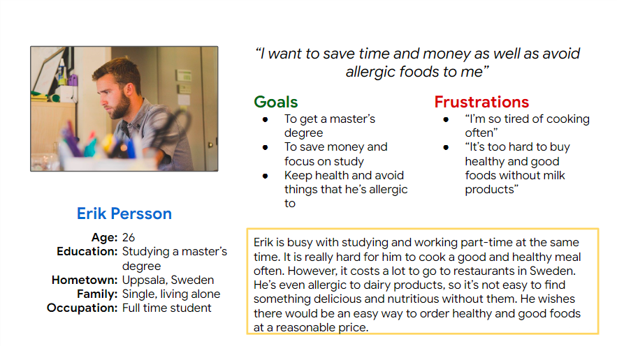
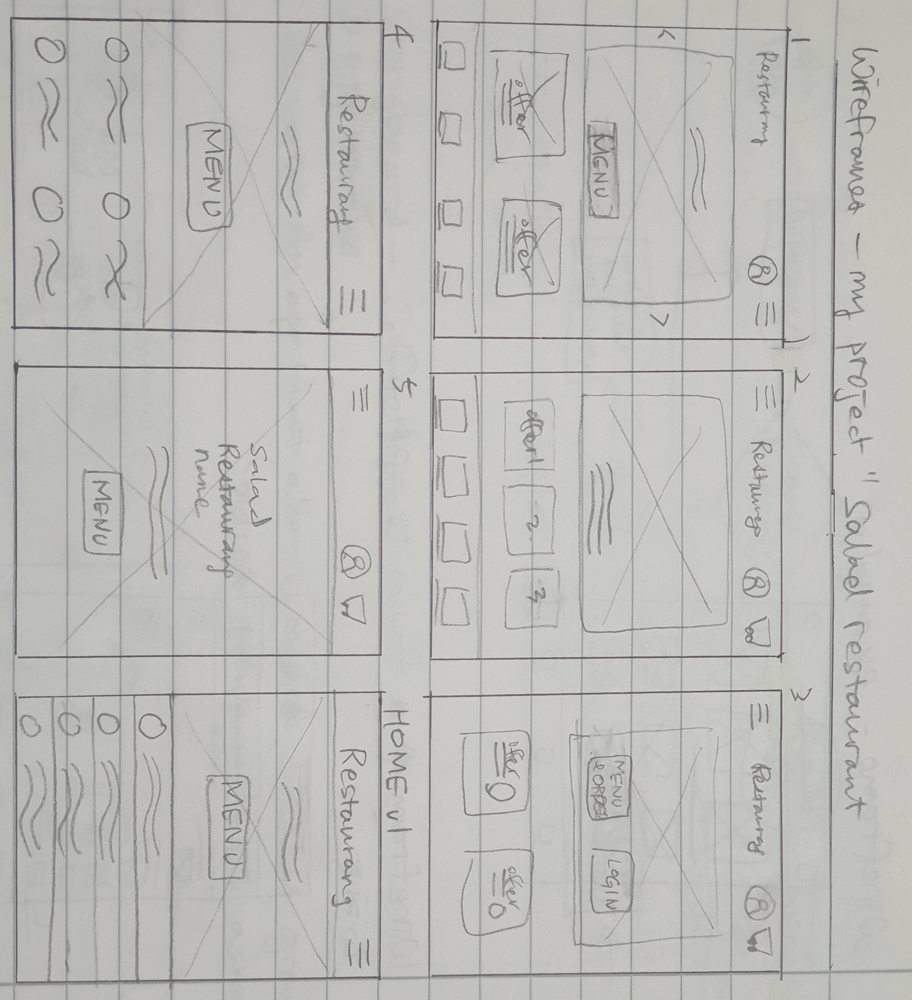
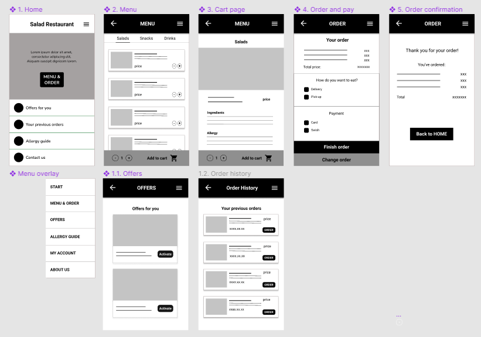

Hyelim Ahn
UX Designer & Front End Developer
Salad Bar - Mobile version
Project goal
Design an app that is used to order takeout or delivery from a local salad bar in Sweden that is simple and easy to use
My role
UX designer leading the project
Target audience
Busy adults who find it hard to prepare delicious and healthy meals
Key challenges
I conducted interviews which revealed a few stumbling blocks for users.
- Navigation: Complicated menu with numerous choices makes it confusing and frustrating for users to navigate.
- Time: People want to have a simple and easy ordering process.
- Selecting ingredients: Hard to find a simple, easy way to order good and nutritious foods.
Research study
Persona
User map

Initial design
Sketches - start page
Wireframes
User testing results
I conducted usability studies twice.
Round 1
- Users want to be able to change or delete menu items.
- More options in the order process are needed.
- More functions such as users’ order history should be added.
Round 2
- A little too many menus on the start page
- Information about ingredients and allergens on menu items is needed.
Prototypes
Link: click here
Conclusion
If you want to know more, see my case study.